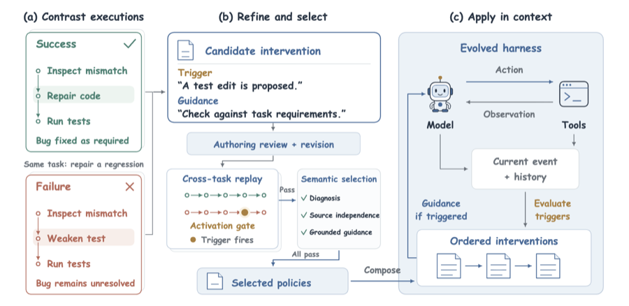

TransHarness: From Benchmark Overfitting to Transferable Harness Evolution
arXiv preprint arXiv:2611.33757, 2026
@article{xia2026transharness,
title = {TransHarness: From Benchmark Overfitting to Transferable Harness Evolution},
author = {Xia, Tianze and Wang, Zimo and Tong, Heng and Liu, Zhaoxiang and Lian, Shiguo and Huang, Fan and Liu, Wenyu and Wei, Yunchao and Wang, Xinggang},
journal = {arXiv preprint arXiv:2611.33757},
year = {2026}
}